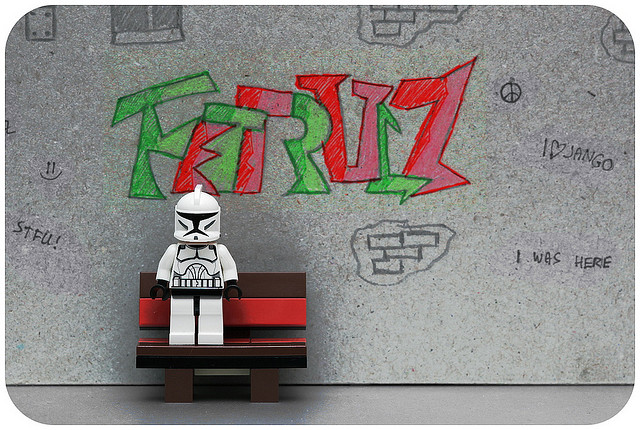
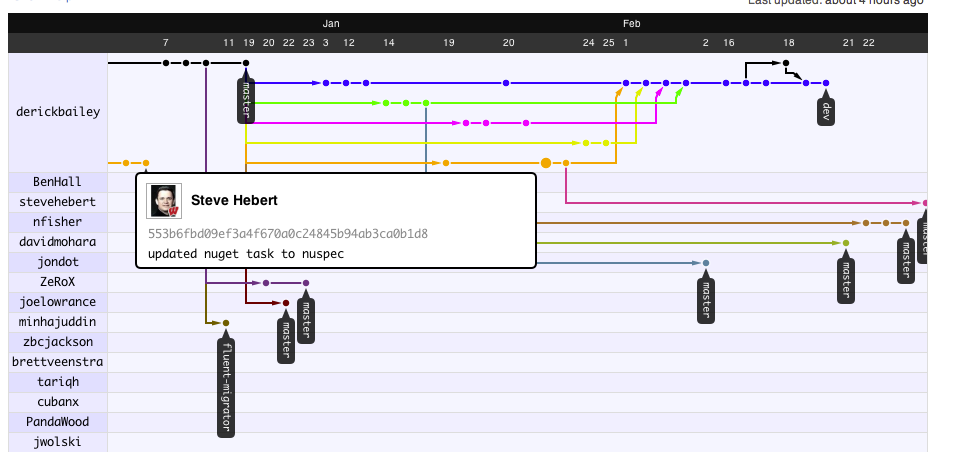
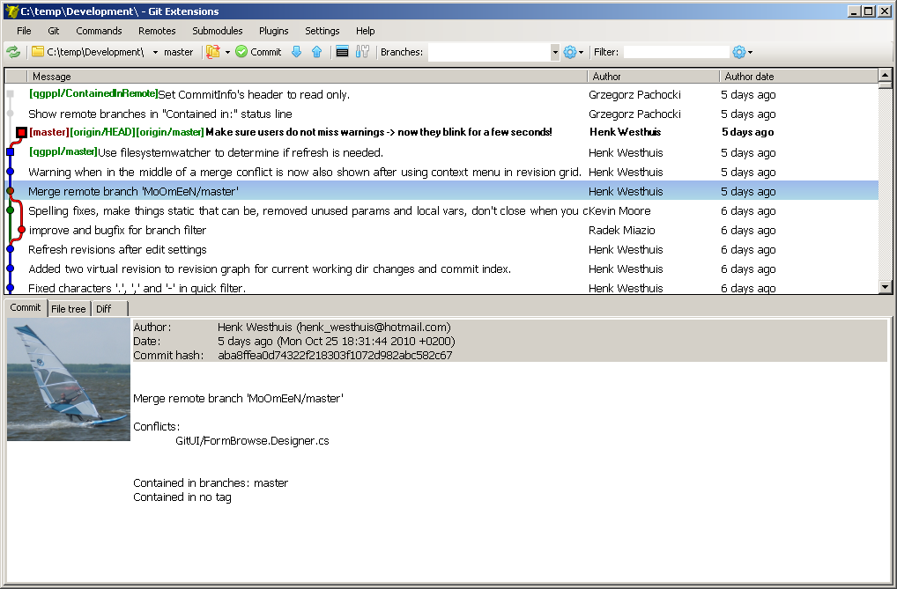
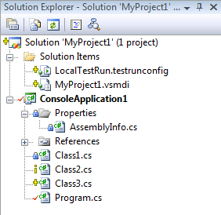
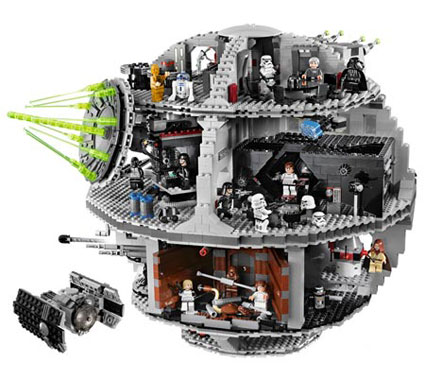
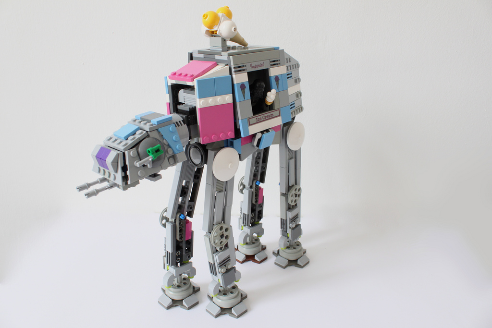

Git to the Dark Side
Darth Vader Control System
About me
Mark Borcherding
I work with Nick
@ Fpweb.net
Contact Info
MarkBorcherding@gmail.com
@MarkBorcherding
fooberry.com
Very creative handles
Source Control Survey
Who doesn't use source control?
Git?

Visual Source Safe?
TFS?
SVN?

hg?

Other?
What's wrong with X?
Slow
Heavy
Unfriendly
Restrictive
Unstable
What do we want
our VCS to be?
...or maybe
DVCS
- Darth Vader Control System
- Distributed Version Control System
No central server
- ...but typically we treat one as canonical
Every machine is an exact copy
All work is local
Why is git better than x?
- http://whygitisbetterthanx.com/
- Built by Scott Chacon (a Githubber)
Why do I like git?
It's fast
It's agile
It's powerful
Branching is light
Essentially
...or maybe
Enough fluff
Let's get started
Installing Git
Linux & Mac OSX
- via package manager
msysgit on Windows
http://code.google.com/p/msysgit/
Warning! Command line!
Minimal Setup
$ git config --global user.name 'Darth Vader'
$ git config --global user.email dvader23@deathstar.org
$ git config --global color.ui true
Created the ~/.gitconfig
[user]
email = dvader23@deathstar.org
name = Darth Vader
[color]
ui = true
Config locations
- Global =
~/.gitconfig - Per Project =
my-project/.git/config
Create the repository
git init
What did that do?
- It created
.gitdirectory - In that directory is the repository
- Commits, branches, tags, config end up here
- We'll look more at this later
Copy a repository
git clone
What did that do?
- Copies every commit from the other repository
See what changed
git status
$ git status
On branch master
Changed but not updated:
(use "git add <file>..." to update what will be committed)
(use "git checkout -- <file>..." to discard changes in working directory)
modified: extra.css
modified: git-dark-side/git-dark-side.md
no changes added to commit (use "git add" and/or "git commit -a")
What lines actually changed?
git diff
Select files to commit
git add
WTF did that do?
The Staging Area
Commit the files
git commit
$ git commit -m 'more changes'
[master 464f706] more changes
1 files changed, 1 insertions(+), 0 deletions(-)
Revert uncommited mistakes
git reset
Reverts any files git is tracking to their last known state.
git clean
Deletes any files git is not currently tracking.
Tracked vs Untracked Files
Create a branch
git branch
Switch branches
git checkout
checkout to the working area
from the .git repository
Merge two branches
git merge
Share changes
git push
See other's changes
git fetch
Rewrite history
git rebase
More about rebase later
What have we learned?
- git init
- git clone
- git add
- git commit
- git reset
- git clean
- git branch
- git checkout
- git merge
- git push
- get fetch
- get rebase
Let's see it in action
rebase
Never rebase after it's left your machine
Always pull --rebase if you pull
Squash the noise away
tags

log
$ git log --oneline old-branch..master
42047c0 adding a few more images
4cf8760 adding tools
edaf8a2 more images
b901401 adding how changed lives
1b63c94 git everything
$ git log --oneline --graph --decorate
* b8d1fe8 (HEAD, master) Merge branch 'b'
|\
| * 4a78951 (b) trying to do foo
* | b4ebdfd fixing bug 23
* | 4eb392c adding feature b
|/
* cad93e9 initial commit
bisect
Hooks
Github

Fork and Pull Request

Tooling
Tooling for Tools
is Amazing
- CI Server
- Github integration
Git Extensions

Git Source Control Provider

How Git will change your life
Git everything

Commit often
Branch for everything
